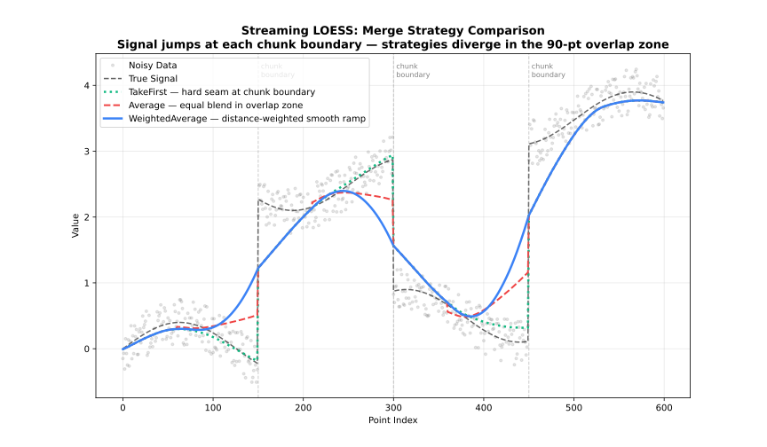

Streaming Adapter
Process large datasets in chunks with configurable overlap.
See also: Batch Adapter
When to Use
- Dataset >100,000 points
- Memory-constrained environments
- Batch processing pipelines
Class
StreamingLoess
The StreamingLoess type processes data in chunks, suitable for very large datasets or streaming applications.
Constructor:
using FastLOESS
model = StreamingLoess(; fraction=0.3, chunk_size=5000, overlap=500)
println(typeof(model))- Keyword arguments configure the
StreamingLoessmodel; see Options Structure below.
process_chunk(model, x, y)
Feeds one chunk of data into the model. Each chunk is fit together with the trailing overlap points buffered from the previous call, then only the points that are fully resolved are returned — the tail of the chunk (the next overlap points) is held back internally, since it will be refit once the following chunk arrives and its estimate reconciled via merge_strategy. This is what lets the adapter process a dataset far larger than memory allows, one bounded-size chunk at a time, without ever materializing the whole dataset at once.
using Random, Statistics
rng = MersenneTwister(42)
x = collect(range(0, 2π, length=100))
y = sin.(x) .+ randn(rng, 100) .* 0.3
process_chunk(model, x, y)
println("Called process_chunk")finalize(model)
Flushes the overlap points still buffered from the last process_chunk call. Because each call withholds its tail until the next chunk arrives to resolve it, the final chunk's tail would never be emitted otherwise — always call finalize once after the last chunk to retrieve it.
result = finalize(model)
println("First smoothed value: ", result.y[1])Options Structure
StreamingLoess keyword arguments (mirrors Loess)
| Field | Type | Default | Description |
|---|---|---|---|
fraction | Float64 | 0.67 | Smoothing fraction (bandwidth) |
iterations | Int | 3 | Number of robustifying iterations |
weight_function | String | "tricube" | Weight function name |
robustness_method | String | "bisquare" | Robustness method name |
scaling_method | String | "mad" | Residual scaling method |
boundary_policy | String | "extend" | Boundary handling policy |
zero_weight_fallback | String | "use_local_mean" | Zero-weight handling |
missing | String | "error" | Policy for non-finite (NaN/Inf) values in each chunk |
auto_converge | Float64 | NaN | Auto-convergence tolerance |
return_diagnostics | Bool | false | Include diagnostics in result |
return_residuals | Bool | false | Include residuals in result |
return_robustness_weights | Bool | false | Include weights in result |
parallel | Bool | true | Enable parallel execution |
degree | String | "linear" | Polynomial degree of local fit |
dimensions | Int | 1 | Number of predictor dimensions |
distance_metric | String | "normalized" | Distance metric; use "minkowski:p" for custom p |
weighted_metric_weights | Union{Vector{Float64}, Nothing} | nothing | Per-dimension weights (used when distance_metric="weighted") |
surface_mode | String | "interpolation" | Surface computation mode |
cell | Union{Float64, Nothing} | nothing | Cell size for interpolation grid |
interpolation_vertices | Union{Int, Nothing} | nothing | Number of interpolation vertices |
boundary_degree_fallback | Union{Bool, Nothing} | nothing | Fall back to lower polynomial degree at boundaries when higher degrees fail |
chunk_size | Int | 5000 | Points per chunk |
overlap | Int | chunk_size / 10 | Overlap between chunks |
merge_strategy | String | "weighted_average" | Strategy for blending overlap regions |
Confidence/prediction intervals, standard errors, cross-validation, and return_sorted are Batch-only and not available here; see Batch Adapter for those.
Options
fraction
fraction is the most important parameter: it controls the size of the local neighbourhood used at each point.
| Range | Effect | Use case |
|---|---|---|
| 0.1-0.3 | Fine detail | Rapidly changing signals |
| 0.3-0.5 | Balanced | General purpose |
| 0.5-0.7 | Heavy smoothing | Noisy data |
| 0.7-1.0 | Very smooth | Trend extraction |
iterations
iterations controls robustness to outliers, at the cost of speed.
| Value | Effect | Performance |
|---|---|---|
| 0 | No robustness | Fastest |
| 1-3 | Moderate | Recommended |
| 4-6 | Strong | Contaminated data |
| 7+ | Very strong | Heavy outliers |
weight_function
See: Weight Functions
"tricube"(default)"epanechnikov""gaussian""uniform"(alias:"boxcar")"biweight"(alias:"bisquare")"triangle"(alias:"triangular")"cosine"
robustness_method
See: Robustness
"bisquare"(default; alias:"biweight")"huber""talwar"
scaling_method
See: Scaling Methods
"mad"(default; alias:"median_absolute_deviation")"mar"(alias:"median_absolute_residual")"mean"(alias:"mean_absolute_residual")
boundary_policy
See: Boundary Handling
"extend"(default; alias:"pad")"reflect"(alias:"mirror")"zero""noboundary"(alias:"none")
zeroweightfallback
Behavior when all neighborhood weights are zero:
| Option | Behavior |
|---|---|
"use_local_mean" (default; aliases: "local_mean", "mean") | Use the mean of the neighborhood |
"return_original" (alias: "original") | Return the original y value |
"return_none" (alias: "none") | Return NaN |
missing
Policy for handling non-finite (NaN/Inf) values within each chunk:
| Option | Behavior |
|---|---|
"error" (default) | Raise an error if any value in the chunk is non-finite |
"drop" | Silently remove rows where any x dimension or y is non-finite before merging the chunk with the overlap buffer |
Note: A length mismatch between x and y always errors, even under "drop".
auto_converge
See: Robustness
Convergence tolerance for early stopping of robustness iterations. NaN (default) disables early stopping.
return_diagnostics
See: Diagnostics
Include a Diagnostics object (RMSE, MAE, R2, residualsd) in the result. `effectivedf/aic/aiccrequire standard errors, which are Batch-only, so they're alwaysnothing` here.
false(default) — leavesresult.diagnosticsasnothingtrue— populatesresult.diagnostics
return_residuals
Include per-point residuals (y - fitted) in the result.
false(default) — leavesresult.residualsasnothingtrue— populatesresult.residuals
returnrobustnessweights
Include the final per-point robustness weights (from the last robustness iteration) in the result.
false(default) — leavesresult.robustness_weightsasnothingtrue— populatesresult.robustness_weights
parallel
Enable multi-threaded execution via Rayon.
true(default) — parallelizes the local regression fits across CPU coresfalse— forces single-threaded execution
degree
See: Polynomial Degree
"constant"or"0"(degree 0)"linear"or"1"(default, degree 1)"quadratic"or"2"(degree 2)"cubic"or"3"(degree 3)"quartic"or"4"(degree 4)
dimensions
See: Multivariate LOESS
Number of predictor dimensions. Set to match the number of columns in a multivariate x array.
- Any integer
>= 1;1(default) is univariate
distance_metric
See: Multivariate LOESS
"normalized"(default — scales each dimension by its range; alias:"norm")"euclidean"(alias:"euclid")"manhattan"(alias:"l1")"chebyshev"(alias:"linf")"minkowski"(use"minkowski:p"string for custom exponent, e.g."minkowski:3")"weighted"plusweighted_metric_weightsfor per-dimension scaling (alias:"weighted_euclidean")
weightedmetricweights
See: Multivariate LOESS
Per-dimension weights, one per dimension declared in dimensions. Only used when distance_metric="weighted"; setting distance_metric="weighted" without providing this raises an error.
nothing(default) — has no effect unlessdistance_metric="weighted"is set- A
Vector{Float64}of per-dimension weights, required whendistance_metric="weighted"
surface_mode
See: Polynomial Degree
Controls whether the local polynomial is evaluated at every query point or at a sparser grid of anchor vertices with Hermite cubic interpolation in between.
| Mode | Behavior | Speed | Accuracy |
|---|---|---|---|
"interpolation" (default) | Evaluate at vertices, interpolate between | Faster | Slight approximation |
"direct" | Evaluate at every query point | Slower | Full precision |
cell
Cell size for the interpolation grid, as a fraction of the data range. Only applies when surface_mode="interpolation".
nothing(default) — uses the library default (0.2)- Any
Float64in(0, 1]
interpolation_vertices
Caps the maximum number of interpolation vertices, overriding the count implied by cell. Only applies when surface_mode="interpolation".
nothing(default) — uses the library default (no explicit cap)- Any integer
>= 1
boundarydegreefallback
Whether to reduce the polynomial degree at boundary vertices when the requested degree can't be fit there. Only applies when surface_mode="interpolation".
nothing(default) — uses the library default (enabled)true— falls back to a lower degree at boundariesfalse— raises an error instead of silently falling back
chunk_size
Number of points processed per chunk. Larger chunks reduce per-chunk overhead and give each local fit more surrounding context, at the cost of higher peak memory; smaller chunks bound memory tightly but increase the fraction of points that fall in overlap regions. A good starting point is balancing available memory against how much processing overhead per chunk is acceptable — match it to your file-read buffer or message-batch size to avoid unnecessary copying.
overlap
Number of points retained from the previous chunk as context, so the neighbourhood at chunk boundaries isn't artificially truncated. Points inside the overlap zone are fitted twice (once by each chunk) and reconciled via merge_strategy. A good starting point is 10–20% of chunk_size: too little overlap causes visible boundary artefacts, while too much wastes computation refitting the same points twice.
-1(default) — computeschunk_size / 10, clamped to at least 1 and at mostchunk_size - 10- Any integer
>= 1and< chunk_size
merge_strategy
See: Merge Strategies
| Strategy | Behavior |
|---|---|
"weighted_average" (default) | Distance-weighted blend |
"average" | Average overlapping values |
"take_first" | Keep left chunk values |
"take_last" | Keep right chunk values |

The streaming adapter buffers overlap data. Call finalize(model) after the last chunk to retrieve the buffered tail.
Result Structure
LoessResult
Returned by process_chunk and finalize.
| Field | Type | Description |
|---|---|---|
x | Vector{Float64} | x values (same order as input) |
y | Vector{Float64} | Smoothed y values |
fraction_used | Float64 | Fraction used |
iterations_used | Union{Int, Nothing} | Robustness iterations actually performed |
standard_errors | Union{Vector{Float64}, Nothing} | Always nothing (Batch only) |
confidence_lower | Union{Vector{Float64}, Nothing} | Always nothing (Batch only) |
confidence_upper | Union{Vector{Float64}, Nothing} | Always nothing (Batch only) |
prediction_lower | Union{Vector{Float64}, Nothing} | Always nothing (Batch only) |
prediction_upper | Union{Vector{Float64}, Nothing} | Always nothing (Batch only) |
residuals | Union{Vector{Float64}, Nothing} | Residuals (if return_residuals) |
robustness_weights | Union{Vector{Float64}, Nothing} | Robustness weights (if return_robustness_weights) |
cv_scores | Union{Vector{Float64}, Nothing} | Always nothing (Batch only) |
diagnostics | Union{Diagnostics, Nothing} | Fit metrics (if return_diagnostics) |
dimensions | Int | Number of predictor dimensions |
Diagnostics
| Field | Type | Description |
|---|---|---|
rmse | Float64 | Root Mean Squared Error |
mae | Float64 | Mean Absolute Error |
r_squared | Float64 | R-squared |
residual_sd | Float64 | Residual standard deviation |
effective_df | Float64 | Always NaN (requires standard errors, Batch only) |
aic | Float64 | Always NaN (requires effective_df, Batch only) |
aicc | Float64 | Always NaN (requires effective_df, Batch only) |
Example
using FastLOESS
using Random, Statistics
rng = MersenneTwister(42)
x = collect(range(0, 2π, length=100))
y = sin.(x) .+ randn(rng, 100) .* 0.3
model = StreamingLoess(;
fraction=0.3,
iterations=2,
chunk_size=5000,
overlap=500,
merge_strategy="average"
)
process_chunk(model, x, y)
result = finalize(model)
println("First smoothed value: ", result.y[1])